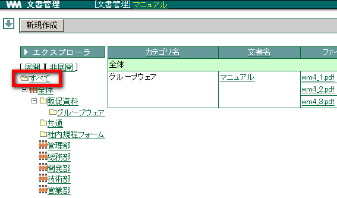
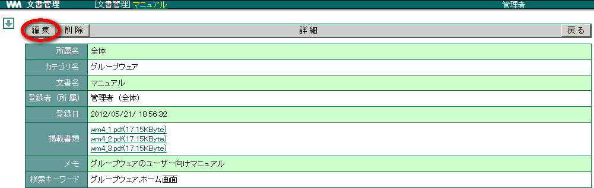

11. 文書管理¶
オフィス内で煩雑になりがちな電子文書を、整理・管理することができます。社内で統一して使用する報告書の文書ファイルや、勤怠計算書のファイルなどを登録しておけば、使いたいときに取り出すことができます。管理できる文書の種類は問いません。 [1]
11.1. カテゴリを登録する¶
文書を登録する際のカテゴリを登録しましょう。カテゴリは登録するユーザーが所属する部署ごとに登録されます。
メニューの
 をクリックします。
をクリックします。カテゴリ登録 をクリックします。

新規登録 をクリックします。

[カテゴリ名] を入力し、 OK クリックします。

| 上位カテゴリ | 選択した所属名の直下にカテゴリを作成する場合は なし を選択。 既に登録している上位カテゴリの下に作成する場合は、該当するカテゴリを選択します。 |
| カテゴリコード | 任意の数字を入力します。複数のカテゴリを登録する場合、カテゴリコードが重複しない ようにします。また、複数のカテゴリを登録した場合、カテゴリはカテゴリコードが 若い順に表示されます。 |
11.2. 文書を登録する¶
登録できる文書の種類は問いません。文書を登録しましょう。 [2]
メニューの
をクリックします。新規作成 をクリックします。

各項目を選択・入力し、 参照 をクリックしてファイルを選択、 開く をクリックします。
追加 をクリックします。

登録する掲載書類のファイル数だけを追加を繰り返し、 OK をクリックします


11.3. 登録されている文書を確認する¶
文書はカテゴリごとに分類されています。カテゴリで絞り込んで表示すると目的の文書が見つけやすくなります。
- メニューの をクリックします。
- 登録されている文書すべてが一覧されるように、左ツリーの「すべて」を選択します。
[ 展開 ] ・・・ [全体] の配下にあるカテゴリがすべて表示されます[非展開] ・・・ [全体] の配下にあるカテゴリは非表示となります
確認したい文書の「ファイル名」をクリックします。

ファイル形式を開くことができるソフトが入っている場合、そのソフトが起動してファイルを読み込むことができます。 [3]

11.3.3. 一覧を切り替える¶
文書は部署ごと、カテゴリごとに表示することができます。文書の一覧を切り替えましょう。
メニューの
をクリックします。フォルダの[全体] ＋ をクリックし、該当する部署を選びます。

「カテゴリ名」で文書が登録されているカテゴリを選択します。

文書が絞り込んで表示されます。

11.4. 文書を検索する¶
メニューの
をクリックします。「所属名」と「カテゴリ名」を選択します。 登録されている全ての文書から探したい場合、フォルダ名「すべて」を選択します。
キーワードを入力し、 検索 をクリックします。

該当する文書のみが表示されます。

11.5. 文書を更新する¶
登録した文書を更新しましょう。文書管理に登録している文書は常に新しいものであるようにしましょう。 [5]
メニューの をクリックします。
更新したい文書の「文書名」をクリックします。

編集 クリックします。

内容を編集し、 OK をクリックします。
11.6. 登録した文書を削除する¶
登録した文書を削除しましょう。いったん削除すると元に戻すことはできません。 [6]
メニューの をクリックします。
削除したい文書の「文書名」をクリックします。
削除 をクリックします。

確認メッセージが表示されたら、 OK をクリックします。
脚注
| [1] | 文書管理のアクセス権については 設定画面(管理者) の 文書管理 をご確認ください。 |
| [2] | 文書を登録できるのは、作成・編集権限のがあるユーザーのみです。 |
| [3] | アプリケーションによっては開くことができない場合があります。 |
| [4] | メッセージはご使用のブラウザにより異なります。 |
| [5] | 文書を更新できるのは、登録したユーザーと管理者、また編集権限のあるユーザーのみです。 |
| [6] | 文書を削除できるのは、登録したユーザーと管理者、また編集権限のあるユーザーのみです。 |